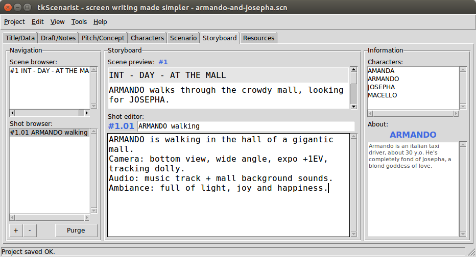

Return to summary.
This app tab is intended to help writing shot details of scenario (storyboard).
It is composed of:
All section panes are resizable: put mouse pointer between each pane, then click and drag sash to get desired size.
Return to summary.
Scene browser fills out automatically while scripting new scenes into scenario's text editor.
Click on a list item to get its scene preview.
Return to summary.
Shot list content depends on scene browser's current selected item.
Select first the desired scene into the scene browser, then click on
+ button to add a new shot item for this scene.
Return to summary.
Select first the desired scene into the scene browser, select the
concerned shot item in its shot list and then click on - button to
delete this shot item for this scene.
A confirmation dialog will popup before deleting definitely.
Please, note empty shot items will delete without confirmation dialog.
Return to summary.
To purge shot list from empty shot items, select first the desired
scene into the scene browser, then click on Purge button.
A confirmation dialog will popup before deleting definitely.
Return to summary.
The shot editing form is composed of a shot number label, a shot title entry and a text editor.
Shot number is formatted along #{scene_index}.{shot_index} template
string.
Numbering is automatic and may sometimes be subject to discontinuity, but exporting storyboard to PDF® will renumber shots correctly in output document.
Return to summary.
Click into the white text entry to fill out shot's title.
Return to summary.
Click onto the white text zone to fill out shot text contents.
The big white zone is called a plain text editor.
This text editor especially supports character names detection.
This object allows multiple line editing with carriage return, undo/redo stack and many other features.
Pressing on the carriage return key will insert a new paragraph.
Double-clicking on a word will select this word only.
Triple-clicking on a word will select the whole paragraph.
You may select all text by using Edit > Select all menu option or
with <Ctrl-A> keyboard shortcut.
Any selection band is likely to be replaced by the next keystroke on the keyboard.
To undo last operation, either use Edit > Undo menu option or try
<Ctrl-Z> keyboard shortcut.
To redo last cancelled operation, either use Edit > Redo menu
option or try <Ctrl-Shift-Z> keyboard shortcut.
Return to summary.
Select a character name into upper name list and get character's history log underneath.
Return to summary.
IMPORTANT: don't forget to save your project regularly, either
with Project > Save menu option or with <Ctrl-S> keyboard shortcut.
Return to summary.
Return to homepage.